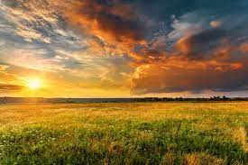
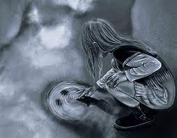

I am an enthusiastic person with a passion for creativity and a love for problem-solving. I have a profound interest in technology and I love to keep learning and exploring new things.
Movie: Coco
Book: The Alchemist
TV Show: Big Bang Theory


Lucknow, known as the "City of Nawabs," is famed for its rich cultural heritage, exquisite Mughal architecture, and delectable Awadhi cuisine. The city showcases a harmonious blend of historical charm and modern vibrancy, offering visitors a captivating glimpse into India's diverse tapestry. From the iconic Bara Imambara to the bustling markets, Lucknow is a cultural haven in the heart of Uttar Pradesh.